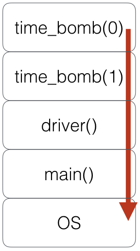
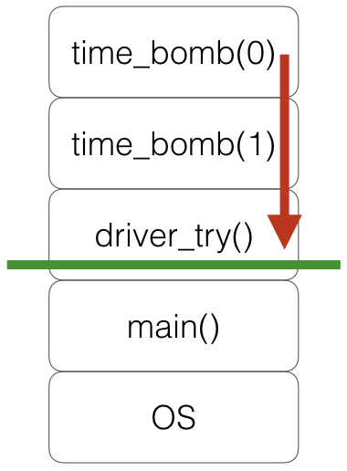

fonctions¶
le mot clé def¶
on définit une fonction avec le mot-clé def
# remarquez:
# . l'indentation
# . le mot clé return
# . le docstring
def P(x):
"""
la fonction P implémente
le polynôme
que l'on étudie
"""
return x**2 + 3*x + 2
# un appel
P(10)
132
P(100)
10302
# le docstring est rangé
# dans la fonction
help(P)
Help on function P in module __main__:
P(x)
la fonction P implémente
le polynôme
que l'on étudie
syntaxe¶
en Python, les sauts de ligne et la présentation (indentation)
font partie de la syntaxe
c’est différent d’autres langages comme C++, Java, Javascript, …
ce choix est fait pour augmenter la lisibilité
car on n’a alors pas besoin de sucre syntaxique comme begin .. end ou autres { .. }
syntaxe - illustration¶
c’est l’indentation qui détermine la structure
l’usage est d’indenter de 4 espaces
et de ne pas utiliser de tabulations (trop variables)
// en Javascript
// on écrirait
function foo(i) {
if (i <= 0) {
fonction1(i);
fonction2(i);
} else {
fonction3(i);
}
}
# en Python ce serait
def foo(i):
if i <= 0:
fonction1(i)
fonction2(i)
else:
fonction3(i)
mot-clé if¶
forme générale
if exp1:
...
...
elif exp2:
...
...
else:
...
...
note = 14
appreciation = None
if note >= 16:
appreciation = 'félicitations'
elif note >= 10:
appreciation = 'reçu'
else:
appreciation = 'recalé'
appreciation
'reçu'
boucle while¶
forme générale
while exp:
...
...
n = 132
log = 0
while n >= 1:
log = log + 1
n = n // 2
log
8
return¶
une fonction est censée retourner quelque chose
resultat = fonction(arguments)
avec return on indique ce qui est le résultat
l’exécution de la fonction s’arrête à ce moment-là
si pas de return, le retour est None
# une fonction incomplète
def broken_abs(n):
if n <= 0:
return -n
# avec un négatif
broken_abs(-10)
10
# ici la fonction retourne None
# du coup le notebook n'affiche rien
broken_abs(10)
def fixed_abs(n):
if n <= 0:
return -n
return n
# on ignore la dernière ligne
# puisqu'on est arrivé au return
fixed_abs(-10)
10
fixed_abs(10)
10
variables locales¶
à l’intérieur d’une fonction on peut naturellement utiliser des variables
la portée de ces variables est limitée à la fonction
ici les deux variables var sont des entités distinctes
var = "globale"
def polynom(n):
"""
polynome 4.x3 + 3.x2 + 2x + 1
sans mise à la puissance
"""
var = n # var = n
resultat = 1
resultat += 2 * var
var = var * n # var = n**2
resultat += 3 * var
var = var * n # var = n**3
resultat += 4 * var
print(f"dans def: var = {var}")
return resultat
polynom(1)
dans def: var = 1
10
polynom(10)
dans def: var = 1000
4321
var
'globale'
appels imbriqués / récursion¶
bien sûr dans le code d’une fonction
on peut appeler d’autres fonctions
y compris la fonction courante : fonction récursive (cf fact.py)
lorsque f appelle g,
f est en quelque sorte mise en suspens pendant l’exécution de g
du coup il est nécessaire de conserver où en est f
à quel point on en est dans
fla valeur des variables locales de
f
pile d’exécution¶
c’est le propos de la pile d’exécution
qui conserve la trace des appels imbriqués
illustrons cela avec https://pythontutor.com/
un site qui est très utile pour visualiser l’exécution de code simple
# une magie pour créer des cellules sous pythontutor.com
%load_ext ipythontutor
%%ipythontutor height=500
def fact(n):
if n <= 1:
return n
else:
return n * fact(n-1)
# pour visualiser la pile d'exécution
x = fact(3)
exceptions¶
le mot-clé raise permet de lever une exception
cela a pour effet d’interrompre la fonction courante
et de dépiler les appels jusqu’à
trouver un except qui attrape l’exception
# une fonction qui va faire raise
# mais pas tout de suite
def time_bomb(n):
print(f"in time_bomb({n})")
if n > 0:
return time_bomb(n-1)
else:
raise OverflowError("BOOM")
# si personne n'attrape un raise
# le contrôle retourne à l'OS
# d'une manière très abrupte
def driver():
time_bomb(1)
print("will never pass here")
driver()
in time_bomb(1)
in time_bomb(0)
---------------------------------------------------------------------------
OverflowError Traceback (most recent call last)
/tmp/ipykernel_1885/3279229454.py in <module>
6 print("will never pass here")
7
----> 8 driver()
/tmp/ipykernel_1885/3279229454.py in driver()
3 # d'une manière très abrupte
4 def driver():
----> 5 time_bomb(1)
6 print("will never pass here")
7
/tmp/ipykernel_1885/3588744217.py in time_bomb(n)
4 print(f"in time_bomb({n})")
5 if n > 0:
----> 6 return time_bomb(n-1)
7 else:
8 raise OverflowError("BOOM")
/tmp/ipykernel_1885/3588744217.py in time_bomb(n)
6 return time_bomb(n-1)
7 else:
----> 8 raise OverflowError("BOOM")
OverflowError: BOOM

# cette fois tout est
# sous contrôle
def driver_try():
try:
time_bomb(2)
except Exception as exc:
print(f"OOPS {type(exc)}, {exc}")
print("will do this")
driver_try()
in time_bomb(2)
in time_bomb(1)
in time_bomb(0)
OOPS <class 'OverflowError'>, BOOM
will do this

clause except¶
la clause
raisedoit fournir un objet idoine
ne peut pas par exemple faireraise 1doit être une instance d’un objet de type
BaseException
(ou de l’une de ses sous-classes)la clause
exceptpermet de n’attraper
qu’une partie des exceptions possibles
passage d’arguments¶
les mécanismes de définition et de passage de paramètres sont assez complexes (cf cours
avancé)
pour cette introduction disons simplement qu’on peut définir des paramètres optionnels :
# une fonction qui accepte un ou deux arguments
def foo(obligatoire, optionnel=10):
print(f"obligatoire={obligatoire} optionnel={optionnel}")
# avec deux arguments
foo(100, 20)
obligatoire=100 optionnel=20
# ou avec un seul
foo(1000)
obligatoire=1000 optionnel=10
On verra un peu plus loin comment manipuler un nombre variable d’arguments; mais pour cela on a besoin d’etudier d’abord les types évolués de Python.
exercices¶
https://nbhosting.inria.fr/auditor/notebook/python-mooc:exos/w4/w4-s3-x1-pgcd
https://nbhosting.inria.fr/auditor/notebook/python-mooc:exos/w4/w4-s3-x4-power
écrire une fonction qui calcule la puissance entière
def power(x, n):
"""
retourne x à la puissance n
en O(log(n))
"""
pass # votre code ici
écrire une fonction qui calcule de pgcd
def pgcd(a, b):
"""
retourne le pgcd de a et b
par convention on admet que
pgcd(0, n) == pgcd(n, 0) = n
"""
pass